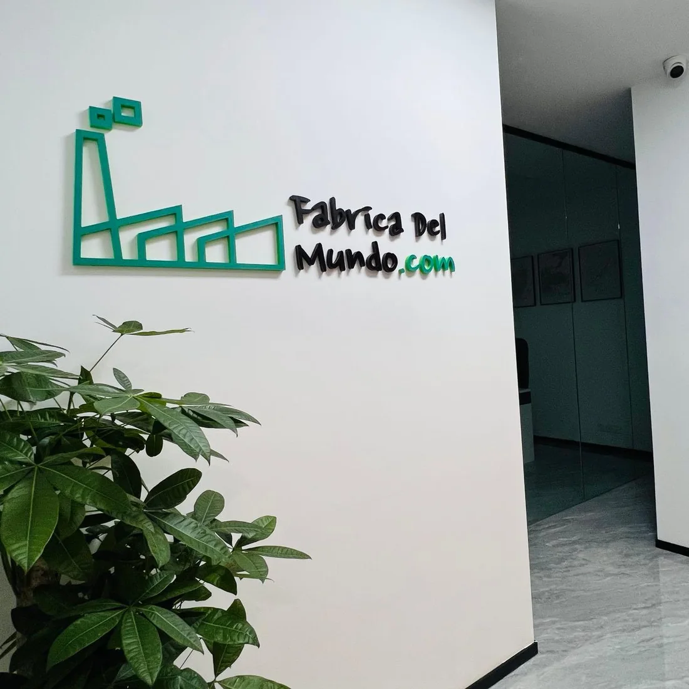
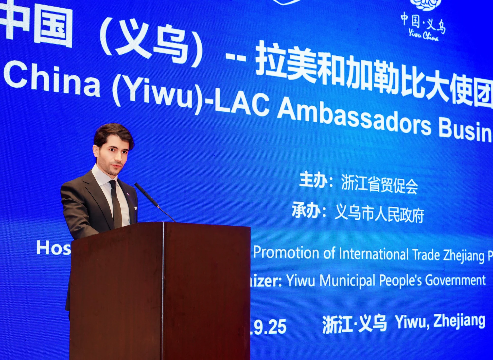
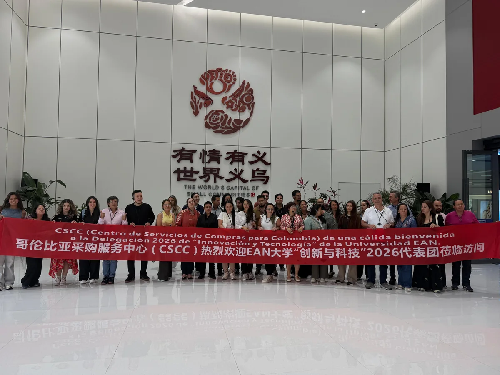
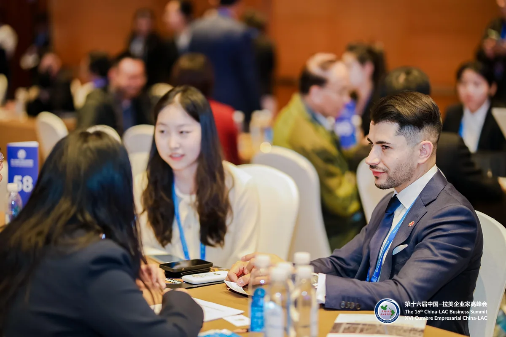
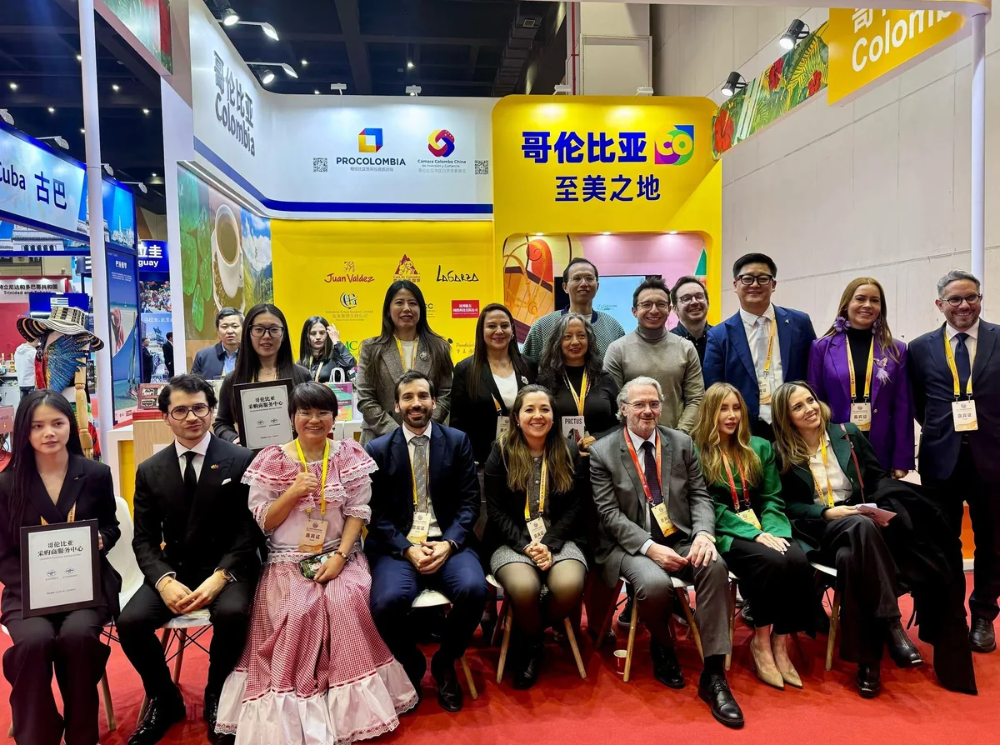
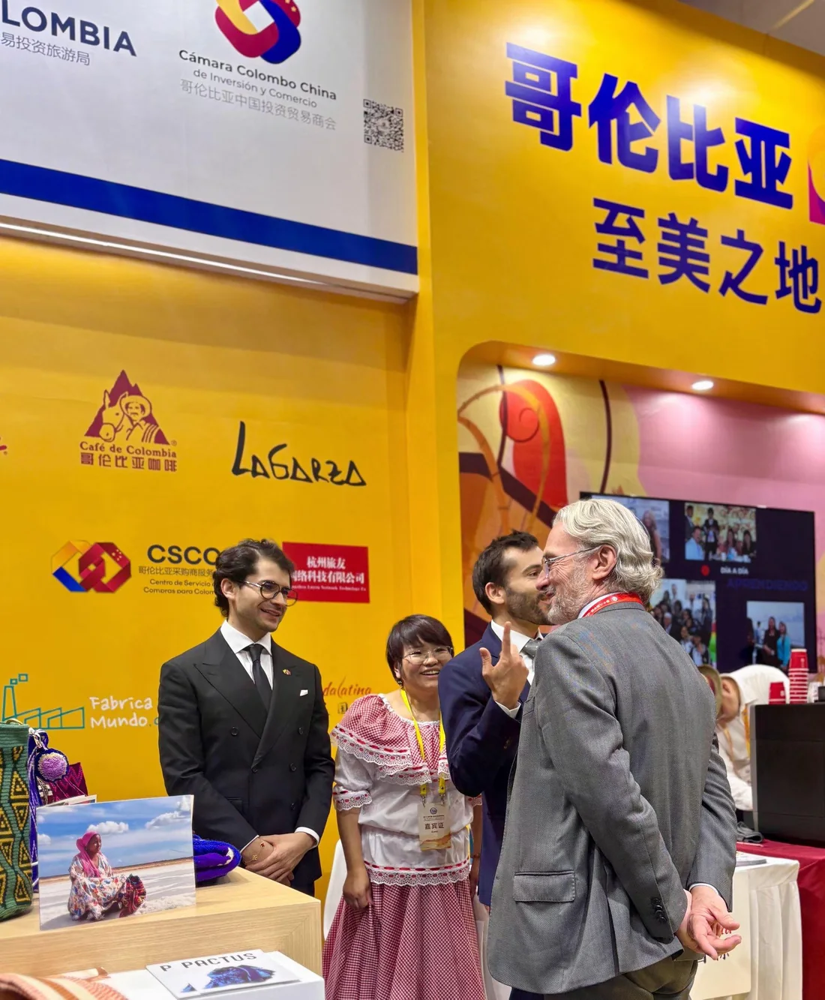
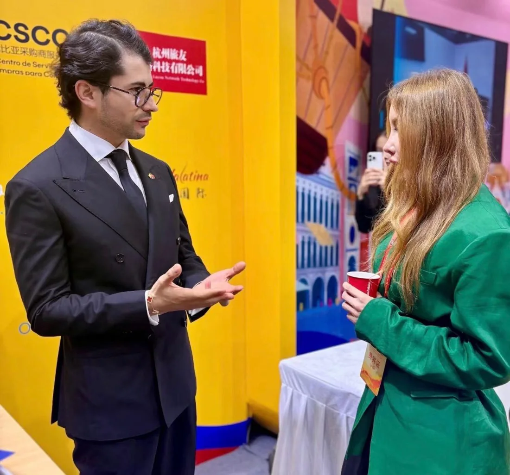
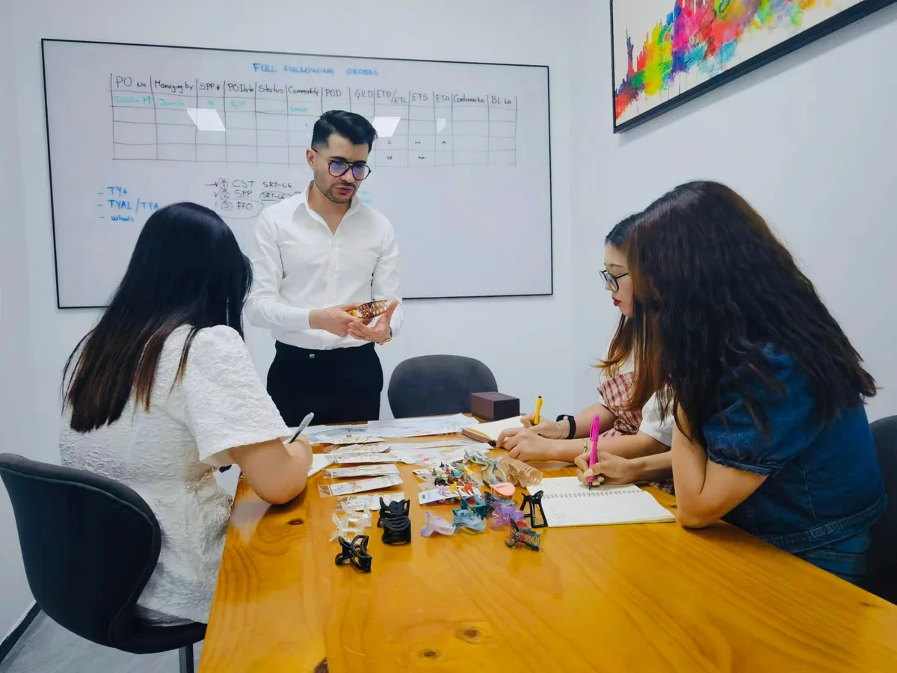
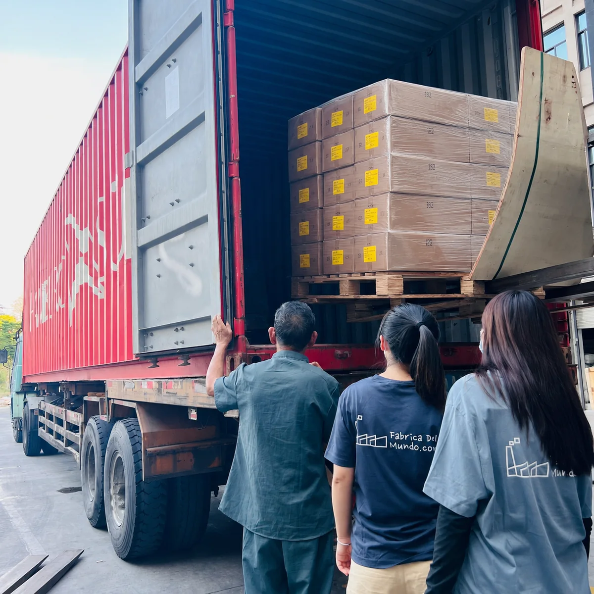
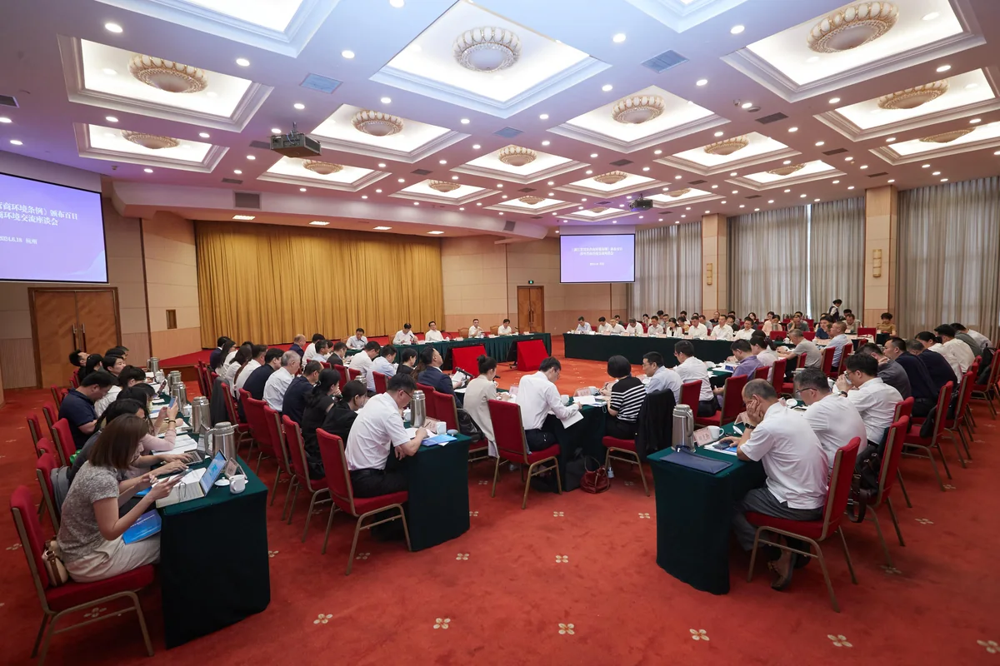

El holding
Un grupo. Divisiones estratégicas.
Oceanic Trade & Investment lidera como núcleo estratégico del grupo a sus divisiones especializadas, que ejecutan cada línea de negocio con enfoque y estructura.
Cada división mantiene su propia identidad, pero todas responden a una misma visión: construir soluciones a medida, de alto valor, respaldadas por nuestra presencia institucional en China, experiencia y capacidad para brindar seguridad en cada proceso.

División · Sourcing estratégico y proyectos en China
Sourcing privado, seguro y hecho a la medida.
La división de sourcing del grupo conecta empresas con China a través de un servicio privado, seguro y hecho a la medida. Especialistas en proyectos B2B de alta complejidad para clientes que exigen calidad, precisión y respaldo operativo: búsqueda y verificación de proveedores, desarrollo de producto y marca, control de calidad en origen y exportación consolidada.
Explorar división →

División · Nuestra empresa 100% china · 万柯利
Presencia local. Seguridad legal. Transparencia total.
Nuestra división establecida en China nos permite operar con presencia local, fortalecer la relación con proveedores y ofrecer a cada cliente mayor seguridad, transparencia y respaldo en sus operaciones: contratos con validez plena en el entorno regulatorio chino, al mismo nivel legislativo que cualquier empresa local.
Inversiones del grupo
Capital que construye futuro.
Además de sus divisiones comerciales, Grupo Oceanic participa como inversionista en startups y proyectos de distintas industrias. La misma disciplina con la que gestionamos cadenas de suministro la aplicamos a la inversión: análisis riguroso, ejecución controlada y visión de largo plazo. Un holding preparado para cualquier negocio.
Nuestra trayectoria
Presencia real. Relaciones reales.
Más de una década tejiendo puentes institucionales y comerciales entre Colombia, China y el mundo — en cumbres oficiales, delegaciones y operación diaria en origen.

China (Yiwu) · América Latina y el Caribe
Vocería en la Cumbre de Embajadores.








Su proyecto merece estructura.
Cuéntenos qué tiene en mente: nuestro comité evalúa cada propuesta y le responde personalmente.
Conectar con Grupo Oceanic →